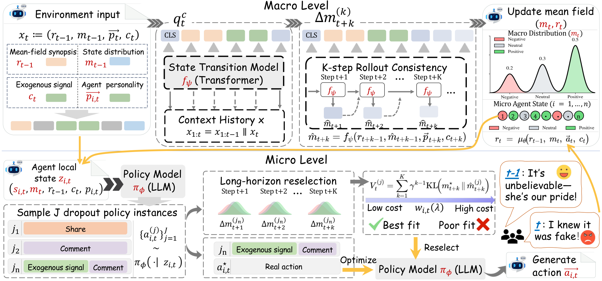

M2Sim
Macro dynamics · Micro states
Coupling Macro Dynamics and Micro States for Long-Horizon Social Simulation
Macro–micro coupled social simulation with evolving individual states and collective dynamics.
1 Huazhong University of Science and Technology, Wuhan, China
2 National University of Singapore, Singapore
3 Institute of Automation, Chinese Academy of Sciences, Beijing, China
† Corresponding author: skyesong@hust.edu.cn

01 / Research context
Abstract
Social network simulation aims to model collective opinion dynamics in large populations, but existing LLM-based simulators primarily focus on aggregate dynamics and largely ignore individual internal states. This limits their ability to capture opinion reversals driven by gradual individual shifts and makes them unreliable over long-horizon simulations.
Unlike existing methods that collapse dynamics into macro-only updates, we propose a social simulation framework, M2Sim, which tightly couples macro-level collective dynamics with micro-level individual states.
We explicitly model micro-level opinion states with a state transition mechanism, coupling Macro-level collective dynamics with Micro-level states. This allows the opinion-state distribution to evolve gradually, rather than triggering instant reactions, enabling the simulator to distinguish states close to or far from switching, capture opinion reversals, and maintain accuracy over long-horizon simulations.
Across real-world events, our M2Sim supports stable simulation of long-horizon social events with up to 40,000 interactions, while reducing long-horizon KL divergence by 75.3% (1.2490 → 0.3089) and reversal KL by 66.9% (1.6425 → 0.5434), significantly mitigating the drift observed in MF-LLM.
02 / Contributions
Highlights
M2Sim addresses three central challenges in social simulation: connecting individual and collective dynamics, sustaining long-horizon evolution, and capturing opinion reversals.
-
Micro–Macro Coupling
M2Sim couples macro-level collective dynamics with micro-level opinion states through an explicit state-transition mechanism. Agents act on both their individual states and the evolving mean field, connecting individual behavior with collective opinion evolution.
-
Long-Horizon Dynamics
Gradual changes in opinion require modeling beyond instantaneous reactions. A learned state-transition model and multi-step rollout consistency help preserve collective trajectories over long horizons, addressing accumulated drift, variance damping, and majority lock-in.
-
Opinion Reversals
Capturing a reversal requires tracking when opinions change and how far they shift. By conditioning actions on evolving opinion states and evaluating their multi-step impacts, M2Sim supports action reselection in response to exogenous signals, addressing the inertia that can obscure turning points.
03 / Inside the framework
Method
M2Sim closes the loop between a two-channel macro mean field and state-conditioned micro agents. Multi-step rollouts train this loop to preserve long-term dynamics and respond to opinion-changing evidence.
-
Representation / Macro level
A two-channel macro mean field
Textual channelrtDistributional channelmtThe macro context combines a textual synopsis rt of recent interactions and exogenous signals with a distributional synopsis mt that tracks the proportions of opinion states. The text channel preserves what happened; the distributional channel retains accumulated opinion-state information. Together, they represent both the semantic context and the evolving public mood.
-
Coupling / Micro level
From macro context to micro agents
A temporal Event Transformer uses the previous mean field, the current participants’ personalities, and the exogenous signal ct to generate participants’ opinion states and update the macro distribution. Each micro agent then generates an action conditioned on its opinion state si,t, personality pi,t, both mean-field channels, and the current signal.
πφ(ai,t | si,t, pi,t, rt−1, mt, ct)After the agents act, the summarizer incorporates their realized actions into rt. This updated text and the state distribution become the next step’s macro context. Historical information is carried through this recursive mean field, rather than through a separate persistent transition model for each identity.
-
Transition training
Look ahead with self-conditioned rollouts
One-step accuracy alone does not ensure stable long simulations. During state-transition training, the model recursively feeds its predicted distribution back into the next step to produce a K-step forecast. A sequence-fitting loss matches observed trajectories, while a rollout-consistency loss penalizes discrepancies that emerge as predictions accumulate.
m̂t → m̂t+1 → m̂t+2 → … → m̂t+KThis exposes the transition model to its own prediction errors during training, helping reduce long-horizon drift, variance damping, and majority lock-in.
-
Policy optimization
Optimize micro actions by their future macro impact
During policy optimization, dropout samples create multiple candidate policy instances. Instead of generating a full future text conversation for every candidate, the state-transition model supplies a multi-step mean-field surrogate. Each candidate is scored by the discounted KL discrepancy between its predicted future distributions and the observed training trajectory; lower-cost candidates receive greater soft weights for action reselection.
V(λ) = ∑k=1…K γk−1 KL(m*t+k ∥ m̂t+k(λ))The policy objective combines this trajectory-based prediction loss with auxiliary text supervision, linking plausible individual actions to their longer-term collective consequences.
Training and simulation. Observed future distributions in this objective are supervision for training. Looking ahead means rolling out model predictions; it does not mean giving agents access to the real future during simulation.
-
Mechanism / Opinion reversal
Why the coupling helps capture reversals
New exogenous information first changes the state-transition context and the distribution of participants’ opinions. Their state-conditioned actions then update the textual mean field, feeding the change back into subsequent steps. Temporal attention captures delayed evidence accumulation, while rollout-based policy training evaluates consequences beyond an immediate response. Together, these mechanisms support gradual shifts and the timing and magnitude of a collective opinion reversal.
04 / Work with M2Sim
Usage
Clone the repository, install its dependencies with Poetry, and create a local environment configuration.
git clone https://github.com/AI4SS/M2Sim.git
cd M2Sim
poetry install
cp .env.example .envConfigure .env for your environment and supply processed event JSON data, trained policy and mean-field model paths, and an Event Transformer checkpoint. In the configured Python environment, the single-event entrypoint is:
python main/script/run_m2sim.py \
--file_name /path/to/event.json \
--simulation_start 50 \
--model 1.5B \
--batch_size 16 \
--st_model_path /path/to/event_transformer_best.ptReplace the placeholder paths with your data and checkpoint. Set --policy_model_path and --mf_model_path when supplying trained model directories explicitly. See the repository README for full setup, data preparation, and evaluation instructions.
Reference
Citation
If this work is useful to your research, please cite the paper.
@misc{zhang2026couplingmacrodynamicsmicro,
title={Coupling Macro Dynamics and Micro States for Long-Horizon Social Simulation},
author={Yunyao Zhang and Yihao Ai and Zuocheng Ying and Qirui Mi and Junqing Yu and Wei Yang and Zikai Song},
year={2026},
eprint={2604.05516},
archivePrefix={arXiv},
primaryClass={cs.SI},
url={https://arxiv.org/abs/2604.05516},
}